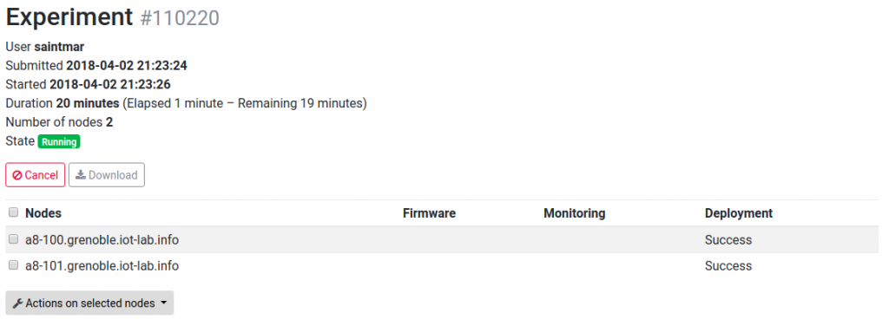

Submit an experiment with A8 nodes and the web portal
 Difficulty: Easy
Difficulty: Easy
 Duration: 15 minutes
Duration: 15 minutes
Prerequisites: Configure SSH Access
Description: The aim of this first tutorial is to discover the IoT-LAB testbed tools by creating and submitting your first experiment, and then interact with running nodes. You will book two A8 nodes on the Grenoble site and deploy it on them. Once deployed, you will hop onto the ssh frontend, ssh connect to them, set up their M3 node with a sample firmware file, and interact with the firmware running on the A8-M3 node and send radio packets.
{kind=link}
- Log into the Webportal
- Launch a new experiment
- Schedule: set an experiment name (no spaces nor funny chars in the experiment name)
- Nodes: Add to experiment (with node properties tab) two nodes with A8 (At86rf231) archi on the Grenoble site
- Submit experiment
- Wait experiment state Running in the Schedule dashboard section. After click on experiment details and visualize which nodes you are booked and verify that you have Success in the deployment result
- Connect to the SSH frontend site
my_computer$ ssh <login>@grenoble.iot-lab.info
- Download the M3 firmware that we use in this tutorial to send radio packets between two A8 nodes through their M3 radio subsystem. This firmware must be placed in the A8 directory of your home directory (
~/A8/)on the IoT-LAB frontend, this directory is automatically accessible from all the A8 nodes of your experiment.<login>@grenoble:~$ cd A8 <login>@grenoble:~/A8$ wget https://raw.githubusercontent.com/wiki/iot-lab/iot-lab/firmwares/tutorial_a8_m3.elf -O tutorial_a8_m3.elf --2015-10-19 19:08:20-- https://raw.githubusercontent.com/wiki/iot-lab/iot-lab/firmwares/tutorial_a8_m3.elf Resolving raw.githubusercontent.com... 185.31.17.133 Connecting to raw.githubusercontent.com|185.31.17.133|:443... connected. WARNING: certificate common name “www.github.com” doesn’t match requested host name “raw.githubusercontent.com”. HTTP request sent, awaiting response... 200 OK Length: 139259 (136K) [application/octet-stream] Saving to: “tutorial_a8_m3.elf” 100%[=====================================================================================================================================================================================================>] 139,259 --.-K/s in 0.09s 2015-10-19 19:08:21 (1.48 MB/s) - “tutorial_a8_m3.elf” saved [139259/139259]
- Note: When your experiment is Started, A8 nodes still needs some time to boot, it may take from 1 to 10 minutes depending on the platform activity. So be patient. Nodes can also fail to boot…
<login>@grenoble:~$ ssh root@node-a8-100.grenoble.iot-lab.info ssh: connect to host node-a8-100.grenoble.iot-lab.info port 22: No route to host <login>@grenoble:~$ ssh root@node-a8-101.grenoble.iot-lab.info ssh: connect to host node-a8-101.grenoble.iot-lab.info port 22: Connection refused
- SSH connect as root to one of your A8 boards, the url is ‘
node-a8-<num>.site.iot-lab.info‘<login>@grenoble:~$ ssh root@node-a8-100.grenoble.iot-lab.info The authenticity of host 'node-a8-100.grenoble.iot-lab.info (10.0.20.100)' can't be established. RSA key fingerprint is 2b:a9:fc:bc:d5:77:27:24:06:fc:46:a2:87:17:e9:b0. Are you sure you want to continue connecting (yes/no)? yes Warning: Permanently added 'node-a8-9.grenoble.iot-lab.info,10.0.20.100' (RSA) to the list of known hosts. Last login: Tue Oct 21 14:25:11 2014 from 10.0.15.251) root@node-a8-100:~#
- You can check that the firmware is indeed present in the A8 folder.
root@node-a8-100:~# ls A8 tutorial_a8_m3.elf
- A8 nodes are running a minimal embedded linux system, most unix commands and python language are supported. You can test the ethernet connectivity between from your two nodes.
root@node-a8-100:~# ping node-a8-101 PING node-a8-101 (10.0.20.101): 56 data bytes 64 bytes from 10.0.20.101: seq=0 ttl=64 time=5.616 ms 64 bytes from 10.0.12.101: seq=1 ttl=64 time=1.038 ms 64 bytes from 10.0.12.101: seq=2 ttl=64 time=0.977 ms
- In this tutorial, we will use the M3 subsystem of the A8 in order to use their 802.15.4 connectivity. When your experiment starts, the M3 subsystem of your A8 node doesn’t run any firmware, so we need to flash them with a basic provided firmware.
root@node-a8-100:~# flash_a8_m3 A8/tutorial_a8_m3.elf Open On-Chip Debugger 0.7.0 (2014-10-16-11:55) Licensed under GNU GPL v2 For bug reports, read http://openocd.sourceforge.net/doc/doxygen/bugs.html adapter speed: 1000 kHz Info : only one transport option; autoselect 'jtag' DEPRECATED! use 'adapter_nsrst_delay' not 'jtag_nsrst_delay' adapter_nsrst_delay: 100 jtag_ntrst_delay: 100 trst_and_srst separate srst_gates_jtag trst_push_pull srst_open_drain connect_deassert_srst adapter speed: 1000 kHz adapter_nsrst_delay: 100 jtag_ntrst_delay: 100 cortex_m3 reset_config sysresetreq Info : max TCK change to: 30000 kHz Info : clock speed 1000 kHz Info : JTAG tap: stm32f1x.cpu tap/device found: 0x3ba00477 (mfg: 0x23b, part: 0xba00, ver: 0x3) Info : JTAG tap: stm32f1x.bs tap/device found: 0x06414041 (mfg: 0x020, part: 0x6414, ver: 0x0) Warn : Block read error address 0xe000ed00 Error: stm32f1x.cpu -- clearing lockup after double fault Error: JTAG-DP OVERRUN - check clock, memaccess, or reduce jtag speed Error: MEM_AP_CSW 0x23000042, MEM_AP_TAR 0xe000edf0 Polling target stm32f1x.cpu failed, GDB will be halted. Polling again in 100ms Error: JTAG-DP OVERRUN - check clock, memaccess, or reduce jtag speed Error: MEM_AP_CSW 0x23000042, MEM_AP_TAR 0xe000edf0 Polling target stm32f1x.cpu failed, GDB will be halted. Polling again in 300ms TargetName Type Endian TapName State -- ------------------ ---------- ------ ------------------ ------------ 0* stm32f1x.cpu cortex_m little stm32f1x.cpu unknown Info : JTAG tap: stm32f1x.cpu tap/device found: 0x3ba00477 (mfg: 0x23b, part: 0xba00, ver: 0x3) Info : JTAG tap: stm32f1x.bs tap/device found: 0x06414041 (mfg: 0x020, part: 0x6414, ver: 0x0) target state: halted target halted due to debug-request, current mode: Thread xPSR: 0x01000000 pc: 0x08002784 msp: 0x20010000 Polling target stm32f1x.cpu succeeded again Info : JTAG tap: stm32f1x.cpu tap/device found: 0x3ba00477 (mfg: 0x23b, part: 0xba00, ver: 0x3) Info : JTAG tap: stm32f1x.bs tap/device found: 0x06414041 (mfg: 0x020, part: 0x6414, ver: 0x0) target state: halted target halted due to debug-request, current mode: Thread xPSR: 0x01000000 pc: 0x08002784 msp: 0x20010000 auto erase enabled Info : device id = 0x10016414 Info : flash size = 512kbytes wrote 28672 bytes from file A8/tutorial_a8_m3.elf in 1.634979s (17.126 KiB/s) verified 28512 bytes in 0.740173s (37.618 KiB/s) Info : JTAG tap: stm32f1x.cpu tap/device found: 0x3ba00477 (mfg: 0x23b, part: 0xba00, ver: 0x3) Info : JTAG tap: stm32f1x.bs tap/device found: 0x06414041 (mfg: 0x020, part: 0x6414, ver: 0x0) shutdown command invoked Return Value: 0 root@node-a8-100:~#
- Each A8 communicates with its M3 subsystem through a serial link named /dev/ttyA8_M3 (speed 500 kB/s). The firmware we flashed on the M3 in the previous step is interactive : it waits for a character on its serial line and sends a packet. One way of interacting with the M3 from the A8 is to use the miniterm.py tool
root@node-a8-100:~/A8# miniterm.py --echo /dev/ttyA8_M3 500000 --- Miniterm on /dev/ttyA8_M3: 500000,8,N,1. --- --- Quit: Ctrl+] IoT-LAB Simple Demo program Type command h: print this help u: print node uid d: read current date using control_node s: send a radio packet b: send a big radio packet e: toggle leds blinking Type Enter to stop printing this help cmd > IoT-LAB Simple Demo program Type command h: print this help u: print node uid d: read current date using control_node s: send a radio packet b: send a big radio packet e: toggle leds blinking cmd >
- Now, connect, flash and start miniterm for the other A8 node.
my_computer$ ssh <login>@grenoble.iot-lab.info <login>@grenoble:~$ ssh root@node-a8-101.grenoble.iot-lab.info root@node-a8-101:~# flash_a8_m3 A8/tutorial_a8_m3.elf root@node-a8-101:~/A8# miniterm.py --echo /dev/ttyA8_M3 500000 --- Miniterm on /dev/ttyA8_M3: 500000,8,N,1. --- --- Quit: Ctrl+] IoT-LAB Simple Demo program Type command h: print this help u: print node uid d: read current date using control_node s: send a radio packet b: send a big radio packet e: toggle leds blinking Type Enter to stop printing this help cmd >
- Now we will make the two nodes communicate using the radio
- On the first terminal, Type ‘s’ and ‘b’ to send packets to your other node
cmd > s radio > Packet sent cmd> b radio > Big packet sent
- On the second node you should see the received message
cmd > radio > Got packet from 3185 (a8-100). Len: 16 Rssi: -49: 'Hello World!: 1' cmd > radio > Got packet from 3185 (a8-100). Len: 60 Rssi: -49: 'Big Hello World!: 1 012345678901234567890123456789012345678'
- On the first terminal, Type ‘s’ and ‘b’ to send packets to your other node
{kind=link}
{kind=link}
Congratulations, you completed the first A8 nodes tutorial !
Go further
The testbed provides A8 command-line tool (eg. iotlab-ssh) which automatizes all the operations executed in this tutorial like waiting for boot, flashing a firmware on the M3 subsystem, running a command or a script and so on. It was provided by default on each IoT-LAB frontend or you can directly install it on your computer to remotely interact with A8 nodes.
- SSH CLI Client tutorial